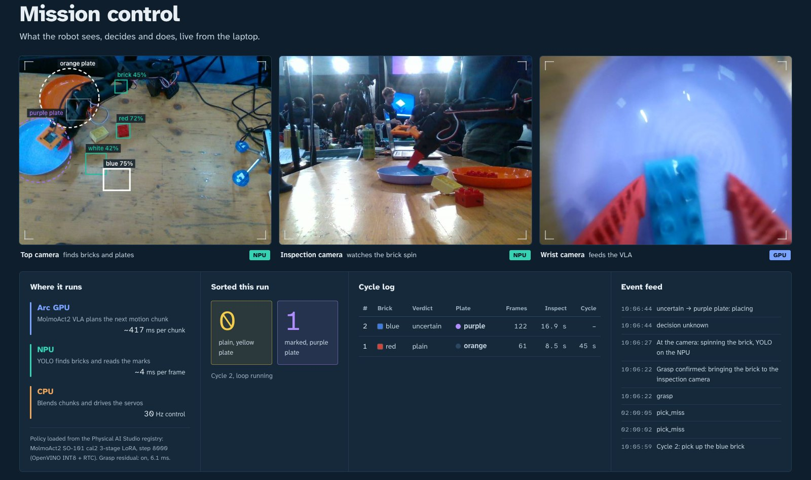

The SO-101 picking a brick and bringing it to the inspection camera (real robot, 1x).
Overview
An SO-101 arm sorts Duplo bricks by inspecting each one: a fine-tuned vision-language-action model picks the brick and holds it up to a camera, the wrist spins it while a detector on the NPU reads every frame, and the arm places it on the yellow plate (plain) or the purple plate (marked). The whole loop runs on one Intel Core Ultra laptop, with each model on the engine that suits it.
The loop. Colours mark the engine each step runs on: Arc GPU, NPU, CPU.
Method
Three parts make the loop work on a laptop: a fast VLA, an inspection that reads the brick from every side, and an engine that keeps all of it moving.
A VLA that keeps up with a 30 Hz arm
We LoRA fine-tune AI2's MolmoAct2 on 456 teleoperated demonstrations, export it to OpenVINO with INT8 weights, and run it on the Arc iGPU with real-time chunking, so a new action chunk always lands before the queue runs dry.
Latency per 30-action chunk on the same 60 recorded frames. The deployed configuration is highlighted.
Spin-and-inspect on the NPU
The VLA holds the brick up to the inspection camera and the wrist rolls it through about 180°. A held-brick YOLO reads about 61 frames on the NPU, around 4 ms each, and an evidence rule over all frames decides: plain goes to the yellow plate; marked, or still uncertain after a re-spin, goes to the purple plate.

Mission control during a run: top, inspection and wrist cameras live.
A closed-loop engine with a digital twin
A controller on the CPU runs survey, pick, grasp check, bring, spin, place and verify until the table is clear, and streams every joint angle to a 3D twin. Drag to orbit; press play to replay the recorded run.
0 spick
The SO-101 twin driven by the logged joint angles of a 160-second run. Plates are placed from the top camera.
Results
Every number below was measured on the robot or on the same recorded frames; the caveats are listed under Limitations.
34x faster and 36x less energy per action chunk
Stock PyTorch on the CPU (baseline) against OpenVINO INT8 with real-time chunking on the Arc iGPU (now), same 60 frames.
37 of 38 rig spins classified correctly
38 labelled spins on the real rig, scored with the live decision rule. The deployed inspector is the last row.
Fine-tuning cuts the policy's error threefold
Joint error against the human demonstrations on the same 60 recorded frames.
Gallery
The system at work.
Limitations
The rig evaluation is one session of 38 spins, and its overlap with the detector's training data is unknown.
The robot currently runs the FP16 export (about 360 ms per chunk); INT8 is the benchmarked configuration.
The residual-RL grasp correction is only evaluated in simulation, partly over a scripted stand-in policy.
Conclusion
A fine-tuned VLA, a held-brick detector and a small evidence rule close the perceive, detect, reason and act loop on a single laptop, with each model on the engine that suits it. Optimising for the hardware was what made it work: 34 times faster and 36 times less energy than the stock model, fast enough for the arm never to wait.
Team
Desmond ZeeJunction 2026, Intel Challenge
Lucas LimJunction 2026, Intel Challenge
Shashank DurgadJunction 2026, Intel Challenge
Wee Joe TanJunction 2026, Intel Challenge
BibTeX
@misc{dlsj2026,
title = {DLSJ: Closed-Loop Defect Sorting with a VLA and an NPU on One Laptop},
author = {Zee, Desmond and Lim, Lucas and Durgad, Shashank and Tan, Wee Joe},
year = {2026},
howpublished = {Junction 2026, Intel Challenge}
}
Acknowledgments
We thank Intel for the challenge, Physical AI Studio and OpenVINO; Junction for hosting; AI2 for MolmoAct2; and TheRobotStudio for the open SO-ARM100 / SO-101 design.